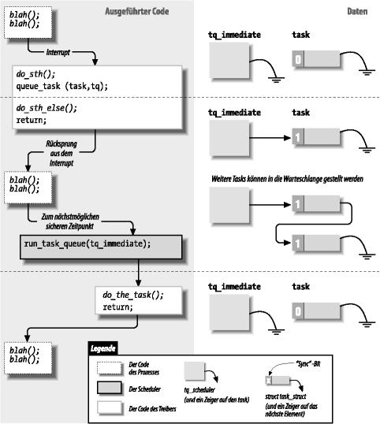

Ein Feature, das viele Treiber benötigen, ist das Vormerken der Ausführung von Tasks zu einem späteren Zeitpunkt, ohne daß Interrupts verwendet werden. Linux bietet zu diesem Zweck drei verschiedene Interfaces an: Task-Schlangen, Tasklets (ab Kernel 2.3.43) und Kernel-Timer. Task-Schlangen und Tasklets sind flexible Werkzeuge, um die Ausführung zu einem späteren Zeitpunkt vorzumerken, wobei “später” verschiedene Bedeutungen haben kann. Sie sind besonders nützlich, wenn man Interrupt-Handler schreibt; wir werden daher noch einige davon in “the Section called Tasklets und untere Hälften in Kapitel 9” in Kapitel 9 sehen. Kernel-Timer werden verwendet, um einen Task für einen bestimmten späteren Zeitpunkt vorzumerken; wir kommen darauf später in “the Section called Kernel-Timer” zurück.
Die Verwaltung von Hardware, die keine Interrupts erzeugen kann, aber trotzdem ein blockierendes Lesen zuläßt, ist eine typische Situation, in der Sie Task-Schlangen oder Tasklets verwenden könnten. Sie müssen regelmäßig das Gerät abfragen, dabei aber aufpassen, daß Sie die CPU nicht mit unnötigen Operationen belasten. Es ist keine gute Idee, den lesenden Prozeß in festen Intervallen aufzuwecken (beispielsweise mit current->timeout), weil jede Abfrage zwei Kontextwechsel benötigen würde(einen, um den Polling-Code im lesenden Prozeß auszuführen, und einen, um zum Prozeß zurückzukehren, der die eigentliche Arbeit tut) und oft ein sinnvoller Abfragemechanismus nur außerhalb des Prozeß-Kontextes implementiert werden kann.
Ein ähnliches Problem liegt vor, wenn Sie einem einfachen Hardware-Gerät regelmäßige Eingaben liefern müssen. Beispielsweise kann es notwendig sein, Schrittwerte an einen Schrittmotor zu schicken, der direkt mit dem Parallel-Port verbunden ist — der Motor muß in gleichmäßigen einzelnen Schritten bewegt werden. In diesem Fall kommuniziert der kontrollierende Prozeß mit Ihrem Gerätetreiber, um die Bewegung zu veranlassen, aber die eigentliche Bewegung sollte Schritt für Schritt durchgeführt werden, nachdem write schon längst wieder verlassen wurde.
Solche Operationen können am schnellsten durchgeführt werden, indem ein Task zur späteren Ausführung vorgemerkt wird. Der Kernel kennt sogenannte Task-“Schlangen”, in denen sich Tasks ansammeln, die dann ausgeführt werden, wenn die Schlange abgearbeitet wird. Sie können eine eigene Task-Schlange erzeugen und nach Belieben starten oder Ihre Tasks in vordefinierten Schlangen registrieren, die vom Kernel selbst gesteuert werden.
Dieser Abschnitt beschreibt zunächst Task-Schlangen, stellt dann die vordefinierten Task-Schlangen vor, die schon einmal ein guter Start für vordefinierte Tests sind (und den Computer zum Stehen bringen, wenn etwas schiefgeht), und geht schließlich darauf ein, wie Sie Ihre eigenen Task-Schlangen definieren können. Anschließend beschreiben wir die neue Tasklet-Schnittstelle, die im 2.4-Kernel bei vielen Anwendungen die Task-Schlangen ersetzt.
Eine Task-Schlange ist eine Liste von Tasks, wobei jeder Task durch einen Funktionszeiger und ein Argument repräsentiert wird. Wenn ein Task gestartet wird, bekommt er ein void *-Argument übergeben und gibt void zurück. Das Zeiger-Argument kann verwendet werden, um eine Datenstruktur an die Routine zu übergeben, oder auch ignoriert werden. Die Schlange selbst ist eine Liste von Strukturen (den Tasks), die dem Kernel-Modul gehören, das sie deklariert oder in die Warteschlange gestellt hat. Das Modul ist völlig selbst dafür verantwortlich, die Strukturen zu allozieren und zu deallozieren; oft werden dafür statische Strukturen verwendet.
Ein Eintrag in der Warteschlange wird durch die folgende Struktur beschrieben, die direkt aus <linux/tqueue.h> kopiert wurde:
struct tq_struct {
struct tq_struct *next; /* verkettete Liste der aktiven bhs */
int sync; /* muss mit 0 initialisiert werden */
void (*routine)(void *); /* aufzurufende Funktion */
void *data; /* Argument fuer die Funktion */
}; |
Das “bh” im ersten Kommentar steht für Bottom Half (untere Hälfte). Eine Bottom Half ist “die Hälfte eines Interrupt-Handlers”. Wir gehen auf dieses Thema ausführlich ein, wenn wir uns im Abschnitt “the Section called Tasklets und untere Hälften in Kapitel 9” in Kapitel 9 mit Interrupt-Handlern beschäftigen. Im Moment reicht es zu wissen, daß die untere Hälfte ein Mechanismus ist, der von einem Gerätetreiber eingesetzt wird, um asynchrone Tasks zu verarbeiten, die normalerweise zu groß sind, um in einem Hardware-Interrupt durchgeführt zu werden. Dieses Kapitel sollte auch ohne das Wissen um untere Hälften verständlich sein, wir werden aber trotzdem von Zeit zu Zeit darauf eingehen.
Die wichtigsten Felder in der oben gezeigten Datenstruktur sind routine und data. Um einen Task zur späteren Ausführung vorzumerken, müssen Sie diesen beiden Feldern Werte zuweisen, bevor Sie die Struktur in die Schlange einstellen, während next und sync leer sein sollten. Der sync-Schalter in der Struktur wird verwendet, um zu verhindern, daß ein und derselbe Task mehrfach in eine Schlange gestellt wird, weil damit der next-Zeiger nicht mehr stimmen würde. Wenn ein Task einmal in die Schlange gestellt worden ist, gilt die Struktur als dem Kernel “gehörend” und sollte nicht mehr verändert werden, bis der Task ausgeführt worden ist.
Die andere bei Task-Schlangen verwendete Datenstruktur ist task_queue, die derzeit nur ein Zeiger auf struct tq_struct ist. Man hat sich entschieden, diesen Zeiger per typedef über ein anderes Symbol zu definieren, um später bei Bedarf task_queue erweitern zu können. task_queue-Zeiger sollten vor der Verwendung mit NULL initialisiert werden.
Die folgende Liste faßt alle Operationen zusammen, die auf Task-Schlangen und struct tq_struct-Datenstrukturen durchgeführt werden.
Dieses Makro deklariert eine Task-Schlange mit dem angegebenen Namen und initialisiert die Schlange mit einem leeren Zustand.
Wie der Name schon andeutet, stellt diese Funktion einen Task in die Schlange. Der Rückgabewert ist 0, wenn sich der Task bereits in der Schlange befand. Ansonsten ist er von 0 verschieden.
Diese Funktion wird verwendet, um eine Schlange voller angesammelter Tasks abzuarbeiten. Sie werden diese Funktion nicht aufrufen müssen, wenn Sie keine eigenen Schlangen deklarieren und verarbeiten.
Bevor wir in die Details der Verwendung der Task-Schlangen einsteigen, müssen wir einen Moment innehalten und uns anschauen, wie diese im Kernel funktionieren.
Eine Task-Schlange ist, wie wir bereits gesehen haben, praktisch eine verkettete Liste von aufzurufenden Funktionen. Wenn run_task_queue gebeten wird, eine bestimmte Schlange auszuführen, wird jeder Eintrag in der Liste ausgeführt. Wenn Sie Funktionen schreiben, die mit Task-Schlangen arbeiten, müssen Sie wissen, wann der Kernel run_task_queue aufruft; der genaue Kontext legt Ihnen eine Beschränkungen hinsichtlich dessen auf, was Sie tun dürfen. Sie sollten außerdem keine Annahmen hinsichtlich der Reihenfolge machen, in denen die Tasks ausgeführt werden; jeder muß seine Aufgabe unabhängig von den anderen erfüllen.
Und wann werden nun Task-Schlangen ausgeführt? Wenn Sie eine der im nächsten Abschnitt besprochenen vordefinierten Task-Schlangen verwenden, dann lautet die Antwort: “Wenn der Kernel dazu Zeit hat.” Verschiedene Schlangen werden zu verschiedenen Zeitpunkten ausgeführt, aber sie werden alle ausgeführt, wenn der Kernel gerade nichts anderes Wichtiges zu tun hat.
Am wichtigsten ist, daß die Task-Schlangen fast sicher nicht ausgeführt werden, wenn der Prozeß, der den Task eingestellt hat, gerade ausgeführt wird. Statt dessen werden die Task-Schlangen asynchron ausgeführt. Bisher ist alles, was wir in unseren Beispiel-Treibern gemacht haben, im Kontext eines Prozesses geschehen, der Systemaufrufe ausführt. Wenn eine Task-Schlange ausgeführt wird, könnte dieser Prozeß aber gerade schlafen, auf einem anderen Prozessor ausgeführt werden oder sogar ganz beendet worden sein.
Die asynchrone Ausführung ähnelt dem, was passiert, wenn ein Hardware-Interrupt eintrifft (das wird in Kapitel 9 genau besprochen). Task-Schlangen werden oft als Folge eines "Software-Interrupts" ausgeführt. Wenn Ihr Code so im Interrupt-Modus (oder: “zur Interrupt-Zeit”) ausgeführt wird, gibt es eine Reihe von Einschränkungen. Wir stellen diese hier vor und werden an verschiedenen Stellen in diesem Buch wieder darauf stoßen. Die Wiederholungen sind hier angebracht, denn die Regeln für den Interrupt-Modus müssen befolgt werden, ansonsten kommt das System in große Schwierigkeiten.
Eine Reihe von Aktionen brauchen den Kontext eines Prozesses, um ausgeführt werden zu können. Wenn Sie sich außerhalb von Prozeß-Kontexten (also im Interrupt-Modus) befinden, müssen Sie die folgenden Regeln beachten:
Es ist kein Zugriff auf den User-Space möglich. Weil es keinen Prozeß-Kontext gibt, gibt es auch keinen Pfad in den User-Space, der zu einem bestimmten Prozeß gehören könnte.
Der Zeiger current ist im Interrupt-Modus nicht gültig und kann nicht verwendet werden.
Es darf nicht geschlafen werden, und es darf kein Scheduling vorkommen. Code im Interrupt-Modus darf weder schedule noch sleep_on aufrufen, außerdem auch keine andere Funktion, die schlafen könnte. Beispielsweise verstößt der Aufruf von kmalloc(..., GFP_KERNEL) gegen die Regeln. Semaphore dürfen auch nicht verwendet werden, weil auch diese schlafen können.
Kernel-Code kann durch Aufruf der Funktion in_interrupt() feststellen, ob er sich im Interrupt-Modus befindet oder nicht. Diese Funktion erwartet keine Argumente und gibt einen von Null verschiedenen Wert zurück, wenn sich der Prozessor im Interrupt-Modus befindet.
Ein weiteres Merkmal der aktuellen Implementation von Task-Schlangen besteht darin, daß ein Task sich selbst wieder durch Aufrufen von queue_task in die gleiche Schlange einreihen kann, in der er ausgeführt wurde. Das ist möglich, weil der Kopf der Schlange durch einen NULL-Zeiger ersetzt wird, bevor Tasks konsumiert werden. Als Folge davon wird eine neue Schlange aufgebaut, sobald die Ausführung der alten beginnt.
Obwohl das erneute Einstellen des gleichen Tasks nutzlos erscheinen mag, es ist manchmal doch nützlich. Denken Sie beispielsweise an einen Treiber, der ein Paar von Schrittmotoren schrittweise bewegt, indem er sich immer wieder in der Schlange einträgt, bis das Ziel erreicht ist. Ein weiteres Beispiel ist das Modul jiq, in dem sich die Druckfunktion selbst wieder vormerkt, um die Ausgabe zu erreichen — als Folge davon wird die Timer-Schlange mehrfach durchlaufen.
Eine verzögerte Ausführung ist am einfachsten zu erreichen, wenn Sie die Schlangen verwenden, die bereits vom Kernel verwaltet werden. Es gibt vier solche Schlangen, die unten beschrieben werden, aber Ihr Treiber kann nur die ersten drei verwenden. Die Schlangen werden in <linux/tqueue.h> definiert; diese Header-Datei sollte in Ihren Quellen eingebunden werden.
Diese Schlange unterscheidet sich von allen anderen vordefinierten Task-Schlangen dadurch, daß sie im Prozeß-Kontext ausgeführt wird, was bedeutet, daß die Tasks etwas mehr Freiheit bei der Ausführung ihrer Aufgaben haben. In Linux 2.4 wird diese Schlange aus einem dafür abgestellten Kernel-Thread namens keventd heraus ausgeführt und über eine Funktion namens schedule_task manipuliert. In älteren Kernel-Versionen wurde keventd nicht verwendet und die Schlange (tq_scheduler) direkt manipuliert.
Diese Schlange wird vom Timer gestartet. Weil der Timer (die Funktion do_timer) zur Interrupt-Zeit läuft, laufen auch alle Tasks in dieser Queue zur Interrupt-Zeit.
Diese Schlange läuft so schnell wie möglich, entweder beim Rücksprung aus dem Systemaufruf oder wenn der Scheduler aufgerufen wird — je nachdem, was zuerst passiert. Die Schlange wird zur Interrupt-Zeit ausgeführt.
Es gibt auch noch weitere vordefinierte Task-Schlangen, diese sind aber für Treiber-Autoren nicht interessant.
Der zeitliche Ablauf in einem Treiber, der eine Task-Schlange verwendet, ist in Abbildung 6-1 abgebildet. Die Abbildung zeigt einen Treiber, der eine Funktion in einem Interrupt-Handler in die Schlange tq_immediate einreiht.
Abbildung 6-1. Zeitlicher Ablauf bei der Verwendung von Task-Schlangen

Beispiele für die verzögerte Ausführung finden Sie im Modul jiq ("Just In Queue"), aus dem auch die Quellbeispiele in diesem Abschnitt entnommen sind. Dieses Modul erzeugt /proc-Dateien, die ähnlich wie bei jit von dd oder anderen Programmen ausgelesen können.
Der Prozeß, der eine jiq-Datei liest, wird schlafen gelegt, bis der Puffer voll ist.[1] Dieses Schlafen wird durch eine einfache Schleife erreicht, die so deklariert ist:
DECLARE_WAIT_QUEUE_HEAD (jiq_wait); |
Der Puffer wird durch aufeinanderfolgende Läufe einer Task-Schlange gefüllt. Jeder Durchlauf durch die Schlange hängt einen Text-String an den zu füllenden Puffer an; jeder String meldet die aktuelle Uhrzeit (in Jiffies), den Prozeß, der während dieses Durchlaufs den Prozessor hat (current) und den Rückgabewert von in_interrupt.
Der Code zum Füllen des Puffers ist auf die Funktion jiq_print_tq beschränkt, die bei jedem Durchlauf durch die verwendete Schlange ausgeführt wird. Die Funktion, die für die Ausgaben sorgt, ist nicht interessant und wird deswegen hier nicht gezeigt; statt dessen schauen wir uns an, wie der Task, der in die Schlange gestellt werden soll, initialisiert wird:
struct tq_struct jiq_task; /* global: mit 0 initialisiert */ /* diese Zeilen stehen in jiq_init() */ jiq_task.routine = jiq_print_tq; jiq_task.data = (void *)&jiq_data; |
Es ist nicht nötig, die Felder sync und next in jiq_task auf Null zu setzen, weil statische Variablen vom Compiler ohnehin mit Null initialisiert werden.
Die Scheduler-Schlange ist in mancherlei Hinsicht am einfachsten zu benutzen. Weil Tasks, die aus dieser Schlange heraus ausgeführt werden, nicht im Interrupt-Modus laufen, können sie mehr tun — vor allem schlafen. Viele Teile des Kernels verwenden diese Schlange, um eine Vielzahl von Aufgaben zu erfüllen.
Ab Kernel 2.4.0-test11 ist die eigentliche Warteschlange, die die Scheduler-Schlange implementiert, vor dem Rest des Kernels verborgen. Anstatt queue_task direkt zu verwenden, muß Code, der diese Queue benutzt, schedule_task aufrufen, um einen Task in die Schlange zu stellen:
int schedule_task(struct tq_struct *task); |
task ist natürlich der einzustellende Task. Der Rückgabewert wird von queue_task übernommen und ist von Null verschieden, wenn sich der Task noch nicht in der Schlange befand.
Ebenfalls ab 2.4.0-test11 startet der Kernel einen speziellen Prozeß namens keventd, dessen einzige Aufgabe darin besteht, Tasks aus der Scheduler-Schlange auszuführen. keventd stellt einen vorhersagbaren Prozeß-Kontext für die auszuführenden Tasks zur Verfügung (im Gegensatz zur früheren Implementation, die die Tasks im Prinzip in einem zufälligen Prozeß-Kontext ausführte).
Es gibt eine Reihe von Auswirkungen der keventd-Implementation, die es wert sind, im Kopf behalten zu werden. Zunächst können die Tasks in dieser Schlange schlafen; mancher Kernel-Code macht von dieser Freiheit Gebrauch. Gut geschriebener Code sollte aber nur sehr kurze Zeit schlafen, weil keine anderen Tasks aus der Scheduler-Schlange ausgeführt werden können, während keventd schläft. Sie sollten auch nicht vergessen, daß Ihr Task die Scheduler-Schlange mit anderen Tasks teilt, die ebenfalls schlafen können. In normalen Situationen werden in die Scheduler-Schlange gestellte Tasks sehr schnell ausgeführt (möglicherweise sogar, bevor schedule_task zurückkehrt). Wenn ein anderer Task aber schläft, kann sich die Zeit, die vergeht, bis Ihre Tasks ausgeführt werden, deutlich vergrößern. Tasks, die unbedingt in einem bestimmten engen Zeitraum ausgeführt werden müssen, sollten eine der anderen Schlangen verwenden.
/proc/jiqsched ist eine Beispiel-Datei, die die Scheduler-Schlange verwendet. Die Funktion read für die Datei leitet alles folgendermaßen an die Task-Schlange weiter:
int jiq_read_sched(char *buf, char **start, off_t offset,
int len, int *eof, void *data)
{
jiq_data.len = 0; /* noch nichts ausgegeben */
jiq_data.buf = buf; /* hier ausgeben */
jiq_data.jiffies = jiffies; /* initiale Zeit */
/* jiq_print ruft queue_task() in jiq_data.queue erneut auf */
jiq_data.queue = SCHEDULER_QUEUE;
schedule_task(&jiq_task); /* bereit zur Ausfuehrung */
interruptible_sleep_on(&jiq_wait); /* schlafen bis zum Beenden */
*eof = 1;
return jiq_data.len;
}
|
Wenn man /proc/jiqsched ausliest, bekommt man etwa folgende Ausgabe:
time delta interrupt pid cpu command 601687 0 0 2 1 keventd 601687 0 0 2 1 keventd 601687 0 0 2 1 keventd 601687 0 0 2 1 keventd 601687 0 0 2 1 keventd 601687 0 0 2 1 keventd 601687 0 0 2 1 keventd 601687 0 0 2 1 keventd 601687 0 0 2 1 keventd |
In dieser Ausgabe ist das Feld time der Wert von jiffies zum Zeitpunkt der Ausführung des Tasks, delta ist die Veränderung in jiffies seit der letzten Ausführung des Tasks, interrupt ist der Rückgabewert der Funktion in_interrupt, pid ist die ID des laufenden Prozesses, CPU ist die Nummer der verwendeten CPU (immer 0 auf Einzelprozessor-Systemen), und command ist der Befehl, der vom aktuellen Prozeß ausgeführt wird.
> > > Wir sehen in diesem Fall, daß der Task immer unter dem Prozeß keventd läuft. Außerdem läuft er sehr schnell — ein Task, der sich selbst wieder in die Scheduler-Schlange stellt, kann in einem einzigen Timer-Tick Hunderte oder Tausende von Malen laufen. Selbst auf einem stark belasteten System ist die Latenz in der Scheduler-Schlange ziemlich klein.
Die Timer-Schlange unterscheidet sich dahingehend von der Scheduler-Schlange, daß die Schlange (tq_timer) direkt verfügbar ist. Außerdem werden Tasks in der Timer-Schlange natürlich im Interrupt-Modus ausgeführt. Weiterhin ist garantiert, daß die Schlange beim nächsten Clock-Tick ausgeführt wird, was die Latenz bei hoher Systemlast beseitigt.
Der Beispielcode implementiert /proc/jiqtimer in der Timer-Schlange. Für diese Schlange muß queue_task verwendet werden:
int jiq_read_timer(char *buf, char **start, off_t offset,
int len, int *eof, void *data)
{
jiq_data.len = 0; /* noch nichts ausgegeben */
jiq_data.buf = buf; /* an dieser Stelle ausgeben */
jiq_data.jiffies = jiffies; /* initiale Zeit */
jiq_data.queue = &tq_timer; /* selbst wieder hier registrieren */
queue_task(&jiq_task, &tq_timer); /* bereit zur Ausfuehrung */
interruptible_sleep_on(&jiq_wait); /* schlafen bis zur Beendigung */
*eof = 1;
return jiq_data.len;
} |
Hier folgt die Ausgabe von head /proc/jiqtimer auf einem System, das gerade einen neuen Kernel kompiliert:
time delta interrupt pid cpu command 45084845 1 1 8783 0 cc1 45084846 1 1 8783 0 cc1 45084847 1 1 8783 0 cc1 45084848 1 1 8783 0 cc1 45084849 1 1 8784 0 as 45084850 1 1 8758 1 cc1 45084851 1 1 8789 0 cpp 45084852 1 1 8758 1 cc1 45084853 1 1 8758 1 cc1 45084854 1 1 8758 1 cc1 45084855 1 1 8758 1 cc1 |
Beachten Sie, daß hier genau ein Timer-Tick zwischen zwei Aufrufen dieses Tasks vergeht und daß gerade ein willkürlicher Prozeß läuft.
Die letzte vordefinierte Schlange, die modularisierter Code verwenden kann, ist die unmittelbare Schlange (immediate queue). Diese Schlange wird über den Mechanismus der unteren Hälften (bottom-half-mechanism) ausgeführt, was bedeutet, daß ein zusätzlicher Schritt zur Benutzung notwendig ist. Untere Hälften werden nur ausgeführt, wenn dem Kernel mitgeteilt worden ist, daß das notwendig ist; dies geschieht durch das “Markieren” der unteren Hälfte. Im Falle von tq_immediate geschieht das durch den Aufruf von mark_bh(IMMEDIATE_BH). Das muß immer geschehen, nachdem der Task in die Schlange gestellt worden ist, ansonsten kann der Kernel die Task-Schlange ausführen, bevor Ihr Task hinzugefügt worden ist.
Die unmittelbare Schlange ist die schnellste Schlange im System, sie wird mit der kürzesten Verzögerung ausgeführt und läuft zur Interrupt-Zeit. Die Schlange wird entweder vom Scheduler oder sobald ein Prozeß aus seinem Systemaufruf zurückkehrt ausgeführt. Eine typische Ausgabe kann folgendermaßen aussehen:
time delta interrupt pid cpu command 45129449 0 1 8883 0 head 45129453 4 1 0 0 swapper 45129453 0 1 601 0 X 45129453 0 1 601 0 X 45129453 0 1 601 0 X 45129453 0 1 601 0 X 45129454 1 1 0 0 swapper 45129454 0 1 601 0 X 45129454 0 1 601 0 X 45129454 0 1 601 0 X 45129454 0 1 601 0 X 45129454 0 1 601 0 X 45129454 0 1 601 0 X 45129454 0 1 601 0 X |
Natürlich kann diese Schlange nicht dazu verwendet werden, die Ausführung eines Tasks zu verzögern, sie ist ja gerade eine "unmittelbare" Schlange. Statt dessen ist sie dafür da, einen Task so schnell wie möglich, aber zu einem sicheren Zeitpunkt auszuführen. Damit ist sie sehr nützlich in Interrupt-Handlern, weil sie einen Einstiegspunkt für die Ausführung von Programm-Code außerhalb der Interrupt-Routine selbst bietet. Der Mechanismus zum Abholen von Netzwerkpaketen basiert beispielsweise auf einem ähnlichen Mechanismus.
Beachten Sie, daß Sie Ihren Task nicht neu in der Schlange registrieren sollten (auch wenn wir das in jiqimmed zu Demonstrationszwecken tun). Sie gewinnen dadurch nichts und bringen Ihren Computer auf manchen Plattformen vollständig zum Halten. Manche Implementationen pflegten die Schlange auszuführen, bis sie leer war. Dies war beispielsweise in der Version 2.0 auf der PC-Plattform der Fall.
Es ist nicht besonders schwierig, eine neue Task-Schlange zu deklarieren. Ein Treiber kann jederzeit eine oder mehrere Task-Schlangen deklarieren; die Tasks werden dann so in die Schlange gestellt, wie wir es bereits für die vordefinierten Schlangen gezeigt haben.
Im Gegensatz zu den vordefinierten Task-Schlangen werden benutzerdefinierte Schlangen nicht automatisch vom Kernel ausgelöst. Der Programmierer, der die Queue verwaltet, muß sich selbst darum kümmern, daß die Schlange ausgeführt wird.
Das folgende Makro deklariert eine Task-Schlange und wird zu einer Variablendeklaration expandiert. Normalerweise steht es am Anfang der Datei, außerhalb jeder Funktion:
DECLARE_TASK_QUEUE(tq_custom); |
Nach der Deklaration der Schlange können Sie die bekannten Funktionen aufrufen, um Tasks einzureihen. Der obige Aufruf geht meistens mit dem folgenden einher:
queue_task(&custom_task, &tq_custom); |
Die folgende Zeile führt tq_custom aus, wenn es an der Zeit ist:
run_task_queue(&tq_custom); |
Wenn Sie jetzt mit benutzerdefinierten Task-Schlangen experimentieren wollen, müssen Sie eine Funktion registrieren, die die Task-Schlange aus einer der vordefinierten Schlangen heraus steuert. Obwohl das etwas umständlich aussieht, ist es doch praktisch. Eine benutzerdefinierte Schlange kann beispielsweise hilfreich sein, wenn Sie Jobs ansammeln wollen, die dann alle zur gleichen Zeit ausgeführt werden sollen, selbst wenn Sie eine andere Schlange verwenden müssen, um diesen Zeitpunkt auszuwählen.
Kurz vor der Freigabe des 2.4-Kernels haben die Entwickler noch einen weiteren Mechanismus zum Herauszögern von Kernel-Tasks hinzugefügt. Dieser Mechanismus namens Tasklets ist jetzt der bevorzugte Mechanismus für untere Hälften, ja die unteren Hälften werden selbst mit Tasklets implementiert.
Tasklets ähneln Task-Schlangen in mehrerer Hinsicht. Sie stellen eine Möglichkeit dar, die Ausführung eines Tasks bis zu einem sicheren Zeitpunkt zu verzögern, und werden immer zur Interrupt-Zeit ausgeführt. Wie Task-Schlangen werden auch Tasklets nur einmal ausgeführt, selbst wenn sie mehrfach vorgemerkt sind, aber Tasklets können auf SMP-Systemen parallel mit anderen (verschiedenen) Tasklets ausgeführt werden. Außerdem ist auf SMP-Systemen gerantiert, daß Tasklets auf der CPU ausgeführt werden, die sie zuerst zur Ausführung vorgemerkt hat, was ein besseres Cache-Verhalten und damit eine bessere Performance bringt.
Jedes Tasklet ist mit einer Funktion verbunden, die aufgerufen wird, wenn das Tasklet ausgeführt werden soll. Das Leben einiger Kernel-Entwickler wurde dadurch einfacher, daß diese Funktion ein Argument des Typs unsigned long bekam, was das Leben wiederum für diejenigen ein wenig schwieriger macht, die lieber einen Zeiger übergeben möchten; das Casten des long-Arguments auf einen Zeigertyp ist auf allen unterstützten Architekturen sicher und in der Speicherverwaltung ziemlich gang und gäbe (wie in Kapitel 13 besprochen wird). Die Tasklet-Funktion gibt keinen Wert zurück.
Die Software-Unterstützung für Tasklets findet sich in <linux/interrupt.h>, das Tasklet selbst muß mit einem der folgenden Makros deklariert werden:
Deklariert ein Tasklet mit dem angegebenen Namen; wenn das Tasklet ausgeführt werden soll (wie unten beschrieben), wird die angegebene Funktion mit dem unsigned long-Datenwert aufgerufen.
Deklariert ein Tasklet wie das vorstehende Makro. Der anfängliche Zustand des Tasklets ist aber “gesperrt”, was bedeutet, daß es zur Ausführung vorgemerkt werden kann, aber nicht ausgeführt wird, bevor es irgendwann in der Zukunft freigegeben wird.
Wenn der Beispiel-Treiber jiq mit 2.4-Header-Dateien kompiliert wird, wird /proc/jiqtasklet implementiert, das genau wie die anderen jiq-Einträge funktioniert, aber Tasklets verwendet; wir haben in sysdep.h keine Tasklets für ältere Kernel-Versionen emuliert. Das Modul deklariert sein Tasklet wie folgt:
void jiq_print_tasklet (unsigned long); DECLARE_TASKLET (jiq_tasklet, jiq_print_tasklet, (unsigned long) &jiq_data); |
Wenn Ihr Treiber ein Tasklet zur Ausführung vormerken möchte, ruft er tasklet_schedule auf:
tasklet_schedule(&jiq_tasklet); |
Wenn ein Tasklet vorgemerkt ist, ist es garantiert, daß es einmal (sofern es eingeschaltet ist) zu einem sicheren Zeitpunkt ausgeführt wird. Tasklets können sich selbst weitgehend genauso wie Task-Schlangen selbst vormerken. Ein Tasklet muß sich keine Gedanken über Multiprozessor-Systeme machen, weil der Kernel sicherstellt, daß jedes Tasklet nur an einer Stelle ausgeführt wird. Wenn Ihr Treiber mehrere Tasklets implementiert, sollte er aber darauf vorbereitet sein, daß eines davon gleichzeitig ausgeführt werden könnte. In diesem Fall müssen Spinlocks zum Schutz kritischer Code-Abschnitte verwendet werden (Semaphore, die schlafen können, dürfen in Tasklets nicht verwendet werden, weil diese zur Interrupt-Zeit laufen).
Die Ausgabe von /proc/jiqtasklet sieht folgendermaßen aus:
time delta interrupt pid cpu command 45472377 0 1 8904 0 head 45472378 1 1 0 0 swapper 45472379 1 1 0 0 swapper 45472380 1 1 0 0 swapper 45472383 3 1 0 0 swapper 45472383 0 1 601 0 X 45472383 0 1 601 0 X 45472383 0 1 601 0 X 45472383 0 1 601 0 X 45472389 6 1 0 0 swapper |
Beachten Sie, daß das Tasklet immer auf der gleichen CPU läuft, obwohl diese Ausgabe von einem Multiprozessor-System stammt.
Das Tasklet-Subsystem enthält noch einige weitere Funktionen für die fortgeschrittene Tasklet-Verwendung:
Diese Funktion sperrt das angegebene Tasklet. Das Tasklet kann immer noch mit tasklet_schedule vorgemerkt werden, aber die Ausführung wird bis zu dem Zeitpunkt verzögert, zu dem das Tasklet wieder freigeschaltet wird.
Schaltet ein zuvor gesperrtes Tasklet wieder frei. Wenn das Tasklet bereits vorgemerkt worden ist, wird es bald ausgeführt werden (aber nicht direkt aus tasklet_enable heraus).
Diese Funktion kann bei Tasklets verwendet werden, die sich selbst immer wieder vormerken. tasklet_kill entfernt das Tasklet aus allen Schlangen, in denen es steht. Um Race Conditions mit dem Tasklet, das sich selbst wieder vormerkt, zu vermeiden, wartet diese Funktion, bis das Tasklet ausgeführt wird, und nimmt es dann aus der Schlange. Sie können also sicher sein, daß Tasklets nicht mitten in der Ausführung gestört werden. Wenn das Tasklet aber gerade nicht läuft und sich selbst vormerkt, kann tasklet_kill hängen bleiben. tasklet_kill darf nicht zur Interrupt-Zeit aufgerufen werden.
> > >
| [1] | Der Puffer einer /proc-Datei ist eine Speicherseite, also 4 KByte oder was auch immer auf Ihrer Plattform gilt. |